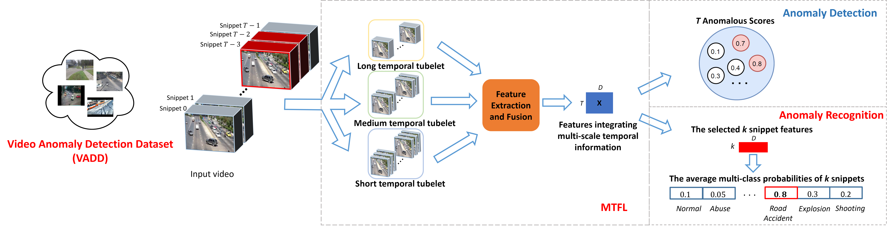
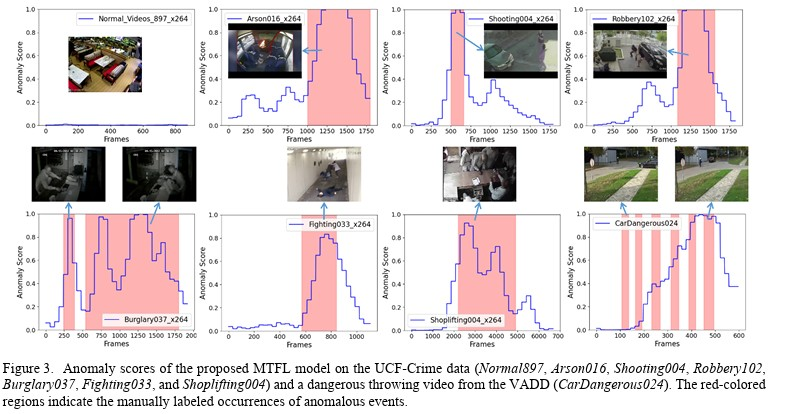

AIMS Lab, Department of Electrical Engineering, Eindhoven University of Technology
This page provides an overview of MTFL for weakly supervised video anomaly detection, including method summary, qualitative results, and resources.

Figure 1: Teaser / qualitative examples.
(Paste the abstract here.)

Figure 2: Method overview.
@article{mtfl2024,
title = {MTFL: Weakly Supervised Anomaly Detection in Surveillance Videos},
author = {Zhang, Yiling and Akdag, Erkut and Bondarev, Egor and De With, Peter H. N.},
journal = {arXiv preprint arXiv:2410.05900},
year = {2024}
}